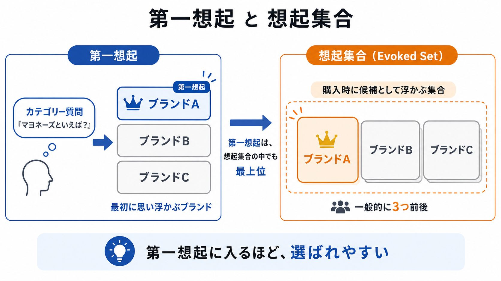
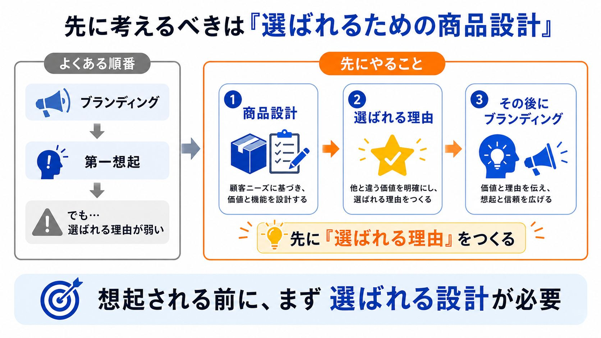

ブランディングから考えると、なぜ売れないのか

どーもとーるです！
「ブランディング」って言葉、好きですよね。
「〇〇といえば私」
「選ばれる人になりたい」
「独自性を出したい」
SNSを始めると、早い段階でこういうことを考え始める人が多いです。
でも、一つ聞いていいですか。
今あなたは、誰かに選ばれていますか？
前回までのKSF（重要成功要因）の話でも触れましたが、「何に時間を使うか」の前に、「何をすべきか」を間違えていたら意味がありません。
その「間違い」の典型が、ブランディングから考えてしまうことです。
ブランディングは「選ばれる理由」ではない
まず、前提を整理します。
ブランディングとは、「選ばれる理由」を作るものではありません。
正確に言うと、「思い出してもらう理由」を作る活動です。
「牛丼といえば？」
と聞かれたとき、「吉野家」を思い浮かべる。
これがブランディングです。
より正確に言うと、「想起集合（Consideration Set）に入ること」がブランディングの本質です。
何かを買おうとするとき、人はまず頭の中で候補を思い浮かべます。
「牛丼を食べたい → 吉野家、すき家、松屋」。
この候補リストのことを、想起集合と言います。
ブランディングとは、この想起ランキングの上位に入るための活動です。
何かのカテゴリーで悩みが浮かんだとき、「あの人のことだ」と思い出してもらえるかどうか。
「マーケティングといえばあの人」
「行動経済学の話といえばあのアカウント」
——そういう状態を作るのが、ブランディングです。

「思い出される」と「選ばれる」は別の話
でも、ここが重要です。
吉野家を思い浮かべた人が、吉野家に行くとは限りません。
牛丼が食べたいと思ったとき——
・吉野家に行くのか
・すき家に行くのか
・松屋に行くのか
を決める理由は、価格かもしれません。
近さかもしれません。味かもしれません。気分かもしれません。
「吉野家」を思い浮かべた（＝想起）ことと、「吉野家に行った」（＝選択）は、まったく別の結果です。
ブランディングが成功しても、それだけでは選ばれない。
「想起されること」と「選ばれること」は、別の問題なんです。
初心者が陥るループ
これが分かっていないと、こういうループに入ります。
世界観を整える。
プロフィールを磨く。
発信のトーンを統一する。
キャラクターを作る。
そうやって「どう見られるか」を整えていく。
認知は少しずつ広がる。
フォロワーも増えてくる。
でも、売れない。
相談が来ない。
商品が動かない。
「なんで？自分なりにブランディングを意識しているのに」
こうなる人が、本当に多いです。
原因はシンプルで、「選ばれる理由」が設計されていないからです。
ブランディングをいくら丁寧にやっても、「なぜあなたを選ぶのか」が明確でなければ、認知が広がるだけで購買には繋がりません。
KSFの回でも話しましたが、ビジネスには「何が重要成功要因か」を正確に把握する必要があります。
ブランディングばかりに時間をかけている人のKSFは、たいていズレています。
最初に考えるべきは「なぜ選ばれるか」
だから、初心者が最初に考えるべきは、「どうブランディングするか」ではありません。
「なぜ選ばれるのか」です。
具体的に言うと、この3つです。
・なぜ自分の商品を選ぶのか
・なぜ他の人ではなく自分に相談するのか
・なぜお金を払うのか
これを、答えられますか？
「安いから」「丁寧だから」「結果が出るから」——ここを言語化できて、初めて商品設計が完成します。
そして、その「選ばれる理由」を市場に届けるための活動が、ブランディングです。
言い換えるなら——
選ばれる理由が商品設計。思い出される理由がブランディング。
逆から始めると、空回りします。

「認知戦略」と「販売戦略」は別物
僕がよく話している「認知戦略と販売戦略は別物」という考え方と、これは完全に一致しています。
SNSで「どう見られるか」を考えるのは、認知戦略です。
フォロワーを増やすこと、投稿のトーンを整えること、存在を知ってもらうこと——これは認知の話。
一方で「なぜ選ばれるか」を考えるのは、販売戦略です。
商品の価格、クオリティ、競合との違い、ターゲットとの一致——これは選ばれる設計の話。
ここで、認知についてもう一つ整理しておきます。
マーケティングには「認知 → 興味 → 欲求 → 行動」という購買のファネルがあります。
ブランディングは、このファネルの一番上——「認知」の部分です。
逆から考えると、後ろ側（顧客満足 → 購買 → 興味）から整えていくことが、初心者にとって本当に重要です。
ブランディングはファネルの一番手前にある話なので、実は初心者にとっての最重要事項ではないんです。
しかも、認知を取る手段は、いくらでもあります。
フォロワーが少なくても、いいねやリアクションをくれた人とコミュニケーションを取れば、その人にとっての「認知」は完了して、興味段階に入ります。
100人のフォロワーのうち10人と深く関われれば、その10人はすでに「興味」まで進んでいます。
問題は、その先です。
興味 → 販売 → 顧客満足が不十分なまま認知だけ広がると、どうなるか。
そこら中に蔓延る「売れてるけど良くない商品」ができあがります。
認知が広がれば広がるほど、中身のなさが拡散されるだけです。
だから、ファネルの後ろ側——商品の中身と顧客体験——を先に整えることが大事なんです。
どちらも大事です。
でも、順番があります。
「売れる設計」ができていない状態でブランディングをしても、知名度が上がるだけで売上は動きません。
極端に言えば、フォロワー1万人のブランドより、フォロワー100人でもリピーターだらけのビジネスの方が、よっぽど強い。
SNSで「どう見られるか」ばかり気にする人は多いですが、実際は選ばれる理由 → 認知される理由の順番で考えた方が、圧倒的に再現性があります。
まとめ：ブランディングは武器ではなく、旗
ブランディングは、武器ではありません。
旗です。
旗を高く掲げれば、遠くから見えるようになる。
でも、旗を見て人が来ても、中身がなければ帰ります。
まず、戦える中身を作る。
「なぜ自分を選ぶのか」を設計する。
その後に、旗を立てる。
これが、正しい順番です。
ブランディングに憧れる気持ちはわかります。
かっこいいですし、やりがいもある。
でも、ブランディングは仕上げの話です。
初心者ほど、仕上げから入ります。
でも、本当は逆です。
選ばれる理由 → 思い出される理由
この順番を守ることで、認知が広がったときに、自然と売上もついてきます。
✦
P.S.
「あなたが選ばれる理由」を言語化していくワークは、メルマガ『3-2-1ラボ』で配信しています。週1回、読むだけで“売れる順番”が整う内容をお届け中です。
▶ メルマガ・無料講座の詳細・ご登録はこちら（3-2-1ラボ）
とーる｜行動経済アナリスト